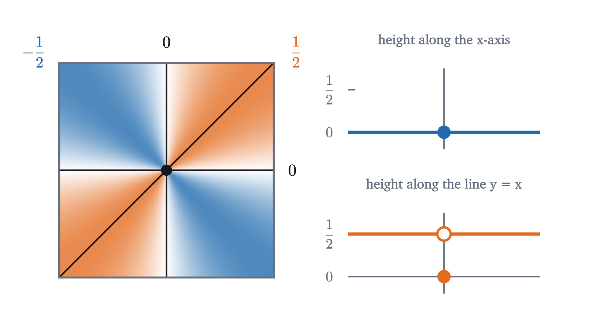
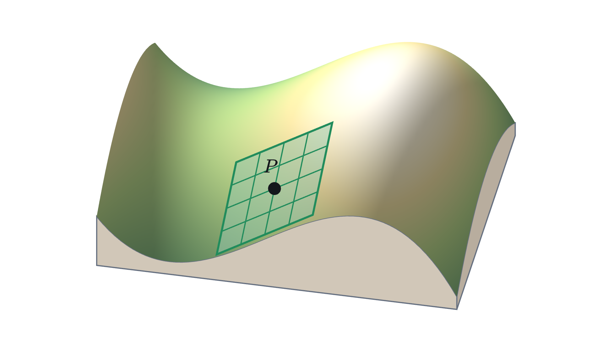
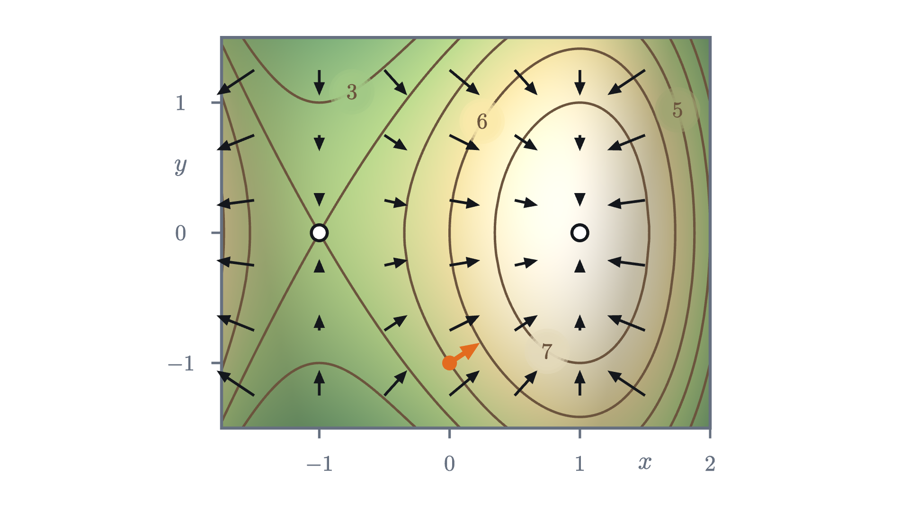

The gradient: which way is uphill?
On a hillside the slope depends on the direction you face. Partial derivatives give two of those slopes, and the gradient packs all of them into one arrow.
AssumesSurfaces and contour maps: functions of two variablesWhat is a derivative? Speed at a single instantThe dot product: projection, angle and why the formula works
Ask how steep a road is and one number answers you: it climbs 8 meters for every 100. Stand on an open hillside and ask the same question, and the honest reply is “facing which way?” Facing one direction the ground rises in front of you, facing another it drops, and somewhere in between you can walk without gaining or losing any height. A point on a hillside has a slope for every direction.
That sounds like infinitely many numbers per point. The surprise of this lesson is that for a smooth hill two numbers are enough, and that those two numbers form an arrow on the map that points straight uphill.
Our hill is the one from the lesson on contour maps. At the map position $x$ kilometers east and $y$ kilometers north of a marker post, its height in hundreds of meters is
It has a summit at $(1, 0)$, where the height is 8, and a pass at $(-1, 0)$. We stand at $P = (0, -1)$, on the south slope, where $f(0, -1) = 5$. Slopes will be in hundreds of meters per kilometer, so a slope of 3 means 300 m of climb per kilometer walked.
Two slopes that are easy to define
The derivative of a function of one variable is the limit of $\frac{g(a + h) - g(a)}{h}$ as $h \to 0$, the slope of its graph. We do not have a function of one variable, but we can make one. Walk due east from $P$. Then $y$ stays at $-1$ and only $x$ changes, so the height you see is
a function of $x$ alone. Geometrically, we have cut the hill with the vertical plane $y = -1$ and kept the curve where they meet.
The slope of the east-west curve at $P$ is an ordinary derivative, and we can compute it from the definition. The difference quotient at $x = 0$ is
which has limit 3 as $h \to 0$. Facing east at $P$, the ground rises at slope 3.
Walking due north instead, $x$ stays at 0 and the height is $f(0, y) = 6 - y^2$. Its difference quotient at $y = -1$ is
with limit 2. Facing north the ground also rises, at slope 2.
The “open disk” guarantees that $f$ is defined at all the nearby points the quotients use. The first limit is the derivative of the one-variable function $x \mapsto f(x, b)$ at $x = a$, so nothing new is needed to compute it: treat $y$ as a constant and differentiate in $x$. For the hill,
which gives $f_x(0, -1) = 3$ and $f_y(0, -1) = 2$ again.
Pause and try
Compute both partial derivatives of the hill at the summit $(1, 0)$, at the pass $(-1, 0)$, and at $(2, 1)$ on the east edge. What do the first two answers have in common, and why is that reasonable?
Show answerHide answer
At $(1, 0)$: $f_x = 3 - 3 = 0$ and $f_y = 0$. At $(-1, 0)$: $f_x = 3 - 3 = 0$ and $f_y = 0$. At $(2, 1)$: $f_x = 3 - 12 = -9$ and $f_y = -2$. At the summit and at the pass both slices are level. At the summit each slice has a maximum there, and at the pass the east-west slice has a minimum and the north-south slice a maximum; a one-variable function has derivative zero at an interior maximum or minimum.
A slope for every direction
East and north are two directions out of a full circle. To face any other way, describe the direction by a unit vector $\mathbf{u} = (u_1, u_2)$, a vector of length 1, so that $u_1^2 + u_2^2 = 1$. Walking a distance $t$ from $(a, b)$ in the direction $\mathbf{u}$ puts you at $(a + tu_1, b + tu_2)$. Because $\mathbf{u}$ has length 1, the number $t$ is the distance walked, and rise over distance is a slope.
With $\mathbf{u} = (1, 0)$ this is $f_x$, and with $\mathbf{u} = (0, 1)$ it is $f_y$. So at $P$ we know the slope facing east is 3 and facing north is 2.
Pause and try
Northeast is exactly halfway between east and north. Before computing anything, guess the slope at $P$ facing northeast. Then compute it: the unit vector is $\mathbf{u} = \left(\tfrac{1}{\sqrt 2}, \tfrac{1}{\sqrt 2}\right)$, so you need $f\left(\tfrac{t}{\sqrt 2}, -1 + \tfrac{t}{\sqrt 2}\right)$.
Show answerHide answer
Write $s = t/\sqrt 2$. Then $f(s, -1 + s) = 6 + 3s - s^3 - (s - 1)^2 = 5 + 5s - s^2 - s^3$. So the quotient is $\dfrac{5s - s^2 - s^3}{t} = \dfrac{1}{\sqrt 2}\left(5 - s - s^2\right)$, with limit $\dfrac{5}{\sqrt 2} \approx 3.54$ as $t \to 0$. The natural guess, the average of 3 and 2, is $2.5$, and it is wrong: the slope facing northeast is larger than both. The correct value is $3 \cdot \tfrac{1}{\sqrt 2} + 2 \cdot \tfrac{1}{\sqrt 2}$: each partial derivative weighted by the matching component of $\mathbf{u}$.
That pattern suggests a rule: the slope in the direction $\mathbf{u}$ is $f_x u_1 + f_y u_2$. If it holds, the two partial derivatives determine every other slope. It is tempting to accept it and move on, but as stated it is false.
Why two partial derivatives are not enough
Consider the function
On the $x$-axis, $g(x, 0) = 0$ for every $x$, so $g_x(0, 0) = 0$. On the $y$-axis, likewise, $g_y(0, 0) = 0$. The proposed rule then predicts slope $0 \cdot u_1 + 0 \cdot u_2 = 0$ in every direction. Now walk along the diagonal: $g(s, s) = \dfrac{s^2}{2s^2} = \dfrac{1}{2}$ for every $s \neq 0$, while $g(0, 0) = 0$.

Facing northeast at the origin, the quotient is $\dfrac{g(s, s) - g(0, 0)}{t} = \dfrac{1/2}{t}$, which grows without bound as $t \to 0$. There is no slope in that direction at all: the surface has a cliff at the origin along every line except the two axes. The partial derivatives exist and are both 0, and they tell us nothing about the other directions, because they only ever look along two lines.
So the rule cannot be a consequence of the partial derivatives existing. The hill must have some additional property that $g$ lacks, and the rule must depend on it.
What a smooth hill has: a linear approximation
In one variable, a function with a derivative looks like its tangent line when you zoom in. Zoom in on the contour map of the hill at $P$ and watch the level curves.
Evenly spaced parallel straight lines are the contour map of a plane, as we saw in the previous lesson. So near $P$ the hill is nearly a plane, and we can find which one. Expanding the formula at a nearby point $(h, -1 + k)$,
The plane part uses exactly the two partial derivatives, 3 and 2. The error is small in a strong sense. One step of size $0.1$ in each direction changes the plane part by tenths, while the error is $-0.001 - 0.01$. Shrink the step by 10 and the error shrinks by at least 100. That is the property to isolate: the error is small compared with the distance $\sqrt{h^2 + k^2}$ from the point.

The important word is hidden in the limit: $(h, k)$ may approach $(0, 0)$ from any direction and along any path, and the same bound must hold for all of them. That is what the partial derivatives alone could not see.
For the hill at $P$, with $A = 3$ and $B = 2$, the error is $E = -h^3 - k^2$. Since $|h| \le \sqrt{h^2 + k^2}$ and $|k| \le \sqrt{h^2 + k^2}$,
which tends to 0. So the hill is differentiable at $P$. The same is true at every point for every polynomial. In general there is a convenient test, which we cite without proof: if $f_x$ and $f_y$ exist throughout a disk around the point and are continuous at the point, then $f$ is differentiable there. (Analysis texts prove it with the mean value theorem, one variable at a time.) The function $g$ fails the definition at the origin, as it must; a problem below asks you to show why.
With this definition the rule we guessed becomes a theorem.
The proof shows where differentiability earns its keep: one bound on the error, valid in all directions at once, handles every $\mathbf{u}$ with the same two numbers.
The gradient and the steepest direction
The expression $f_x u_1 + f_y u_2$ is a dot product: the sum of the products of matching components of two vectors.
For the hill, $\nabla f(x, y) = (3 - 3x^2, -2y)$, and $\nabla f(0, -1) = (3, 2)$. The theorem now reads $D_{\mathbf{u}} f = \nabla f \cdot \mathbf{u}$. The gradient is a vector in the map plane, with an east component and a north component. It is drawn on the map, and it does not point up into the air.
Writing the slope as a dot product pays off at once, because a dot product has a geometric meaning: for vectors $\mathbf{a}$ and $\mathbf{b}$ with angle $\theta$ between them, $\mathbf{a} \cdot \mathbf{b} = |\mathbf{a}|\,|\mathbf{b}| \cos\theta$, where $|\mathbf{a}|$ is the length of $\mathbf{a}$.
Pause and try
At $P$ the slope in direction $\mathbf{u}$ is $3u_1 + 2u_2$. Find the unit vectors $\mathbf{u}$ for which the slope is 0, and say how they are related to the vector $(3, 2)$.
Show answerHide answer
We need $3u_1 + 2u_2 = 0$, so $\mathbf{u}$ is a multiple of $(2, -3)$. Its length must be 1, and $|(2, -3)| = \sqrt{13}$, so $\mathbf{u} = \pm\left(\tfrac{2}{\sqrt{13}}, \tfrac{-3}{\sqrt{13}}\right) \approx \pm(0.555, -0.832)$. These are the two directions perpendicular to $(3, 2)$, since $(3, 2) \cdot (2, -3) = 0$. Facing either way you walk level.
At $P$ this says: the steepest climb has slope $|(3, 2)| = \sqrt{13} \approx 3.61$ and is in the direction $(3, 2)/\sqrt{13} \approx (0.83, 0.55)$, about $34^\circ$ north of east. The animation at the top of the page is this theorem in motion. As the arrow turns, the slope traces one full cosine wave of height $\sqrt{13}$, and its peak is where the arrow lies along the gradient.
The hypothesis $\nabla f(P) \neq \mathbf{0}$ is needed. At the summit and at the pass the gradient is $(0, 0)$, every directional derivative is 0, and no direction is steepest.
The gradient crosses level curves at right angles
The two level directions at $P$ were $\pm(2, -3)/\sqrt{13}$. On the map, the direction in which the height does not change ought to be the direction of the contour line through $P$. Check it: $P$ is at height 5, and the level curve there is $y = -\sqrt{1 + 3x - x^3}$, whose derivative at $x = 0$ is $-\dfrac{3 - 3x^2}{2\sqrt{1 + 3x - x^3}} = -\dfrac{3}{2}$. A line of slope $-\tfrac32$ has direction $(2, -3)$. So the contour is perpendicular to the gradient at $P$. To prove this in general we need the rate of change of $f$ along a curve, which need not be a straight line.

Part (2) is why the arrows in the figure meet the contour lines squarely. It also ties this lesson to the previous one. There we estimated steepness as the contour interval divided by the spacing of the lines, measured straight across them. “Straight across” is the gradient direction, and the slope in that direction is $|\nabla f|$. So close contours and a long gradient are the same fact.
A hiker who always walks in the direction of the gradient crosses every contour at a right angle and gains height as fast as possible at each step.
Worked examples
Check yourself
At a point of a differentiable function, $\nabla f = (4, -3)$. What is the slope facing due north?
Step back to see what happened. A point on a hillside seemed to need a slope for every direction. For a function that is differentiable, meaning one that a plane approximates with an error small compared with the distance, all of those slopes come from two numbers by a dot product, and the geometry of the dot product then hands us the steepest direction and its relation to the contour lines. The work was in finding the right hypothesis; the function $g$ shows that the two partial derivatives alone do not justify any of it. The next lesson uses the perpendicularity of gradients and level curves to find the highest point on a trail.
Problems
The hill is $f(x, y) = 6 + 3x - x^3 - y^2$. Problems 1 and 2 are warm-ups, 3 to 5 combine ideas, and 6 and 7 go further.
Problem 1
Let $q(x, y) = x^3 y - 2y^2$. Find $q_x$, $q_y$ and $\nabla q(1, 2)$. Then compute $q_x(1, 2)$ a second time, directly from the limit definition.
Show solutionHide solution
Treating $y$ as constant, $q_x = 3x^2 y$. Treating $x$ as constant, $q_y = x^3 - 4y$. At $(1, 2)$: $\nabla q = (6, -7)$. From the definition, $q(1 + h, 2) = 2(1 + h)^3 - 8 = -6 + 6h + 6h^2 + 2h^3$ and $q(1, 2) = -6$, so the quotient is $6 + 6h + 2h^2$ for $h \neq 0$, with limit 6.
Problem 2
At the point $(0, 1)$ of the hill, on the north slope, find the slope facing due west, the slope facing northeast, and the largest slope in any direction.
Show solutionHide solution
$\nabla f(0, 1) = (3 - 0, -2) = (3, -2)$. Due west is $\mathbf{u} = (-1, 0)$: slope $-3$. Northeast is $\mathbf{u} = (1, 1)/\sqrt 2$: slope $(3 - 2)/\sqrt 2 = 1/\sqrt 2 \approx 0.71$. The largest slope is $|\nabla f| = \sqrt{13} \approx 3.61$, in the direction $(3, -2)/\sqrt{13}$, about $34^\circ$ south of east. Northeast is about $78.7^\circ$ away from that direction, which is why the slope there is so much smaller: $3.61 \cos 78.7^\circ \approx 0.71$.
Problem 3
Find the equation of the tangent line to the contour line of the hill through $(2, 1)$. Confirm your answer by solving the contour’s equation for $y$ and differentiating.
Show solutionHide solution
$\nabla f(2, 1) = (3 - 12, -2) = (-9, -2)$. The tangent line passes through $(2, 1)$ and is perpendicular to the gradient, so it consists of the points with $(-9, -2) \cdot (x - 2, y - 1) = 0$, that is, $9(x - 2) + 2(y - 1) = 0$, or $y = 1 - 4.5(x - 2)$. For the check: $f(2, 1) = 3$, so the contour is $y^2 = 3 + 3x - x^3$, and near $(2, 1)$, $y = \sqrt{3 + 3x - x^3}$ with $\dfrac{dy}{dx} = \dfrac{3 - 3x^2}{2y} = \dfrac{-9}{2} = -4.5$ at $x = 2$. The slopes agree.
Problem 4
Suppose $f$ is differentiable at $P$ and $\nabla f(P) \neq \mathbf{0}$. In which directions is the slope exactly half the maximum slope? Find them explicitly for the hill at $(0, 1)$, to two decimal places.
Show solutionHide solution
By the steepest ascent theorem the slope is $|\nabla f| \cos\theta$, which is half of $|\nabla f|$ when $\cos\theta = \tfrac12$, that is, $\theta = \pm 60^\circ$: the two directions $60^\circ$ either side of the gradient. At $(0, 1)$ the gradient $(3, -2)$ points at angle $\arctan(-2/3) \approx -33.69^\circ$ from east. The two directions are at $26.31^\circ$ and $-93.69^\circ$: $\mathbf{u} \approx (0.90, 0.44)$ and $\mathbf{u} \approx (-0.06, -1.00)$. Check the first: $3(0.896) - 2(0.443) = 1.80$, which is half of $\sqrt{13} \approx 3.61$.
Problem 5
Find every point of the hill’s map where $\nabla f = \mathbf{0}$. For each, describe what the contour lines look like nearby, and explain why the steepest ascent theorem says nothing there.
Show solutionHide solution
We need $3 - 3x^2 = 0$ and $-2y = 0$, so $x = \pm 1$ and $y = 0$: the points $(1, 0)$ and $(-1, 0)$. At $(1, 0)$, the summit, the nearby contours are closed loops around the point. At $(-1, 0)$, the pass, the contour through the point crosses itself. In both cases every directional derivative is $\mathbf{0} \cdot \mathbf{u} = 0$, so no direction has a larger slope than another, and the angle $\theta$ between $\mathbf{u}$ and the zero vector is not defined. The theorem’s hypothesis $\nabla f(P) \neq \mathbf{0}$ excludes exactly these points.
Problem 6
Prove that if $f$ is differentiable at $(a, b)$ then $f$ is continuous there, meaning $f(a + h, b + k) \to f(a, b)$ as $(h, k) \to (0, 0)$. Deduce that $g(x, y) = \dfrac{xy}{x^2 + y^2}$, $g(0, 0) = 0$, is not differentiable at the origin.
Show solutionHide solution
By definition $f(a + h, b + k) - f(a, b) = Ah + Bk + E(h, k)$. As $(h, k) \to (0, 0)$, $Ah \to 0$ and $Bk \to 0$. Also $|E(h, k)| = \dfrac{|E(h, k)|}{\sqrt{h^2 + k^2}} \cdot \sqrt{h^2 + k^2}$ for $(h, k) \ne (0, 0)$, a product of a factor tending to 0 and a factor tending to 0. So the difference tends to 0. For $g$: along the diagonal, $g(s, s) = \tfrac12$ for all $s \neq 0$, which does not tend to $g(0, 0) = 0$ as $s \to 0$. So $g$ is not continuous at the origin, and therefore not differentiable there.
Problem 7
Let $w(x, y) = \dfrac{x^2 y}{x^2 + y^2}$ for $(x, y) \neq (0, 0)$ and $w(0, 0) = 0$. (a) Show that $D_{\mathbf{u}} w(0, 0)$ exists for every unit vector $\mathbf{u}$ and equals $u_1^2 u_2$. (b) Find $\nabla w(0, 0)$. (c) Is $w$ differentiable at the origin?
Show solutionHide solution
(a) For $t \neq 0$, $w(tu_1, tu_2) = \dfrac{t^3 u_1^2 u_2}{t^2 (u_1^2 + u_2^2)} = t\,u_1^2 u_2$, since $u_1^2 + u_2^2 = 1$. The quotient $\dfrac{w(tu_1, tu_2) - 0}{t}$ equals $u_1^2 u_2$ for every $t \neq 0$, so that is its limit. (b) With $\mathbf{u} = (1, 0)$: $w_x(0, 0) = 1^2 \cdot 0 = 0$. With $\mathbf{u} = (0, 1)$: $w_y(0, 0) = 0$. So $\nabla w(0, 0) = (0, 0)$. (c) No. If $w$ were differentiable at the origin, the theorem would give $D_{\mathbf{u}} w = \nabla w \cdot \mathbf{u} = 0$ for every $\mathbf{u}$. But for $\mathbf{u} = (1, 1)/\sqrt 2$, part (a) gives $\tfrac12 \cdot \tfrac{1}{\sqrt 2} \approx 0.35 \neq 0$. So here a function has a slope in every direction and is still not differentiable: the slopes do not fit together into a single plane.